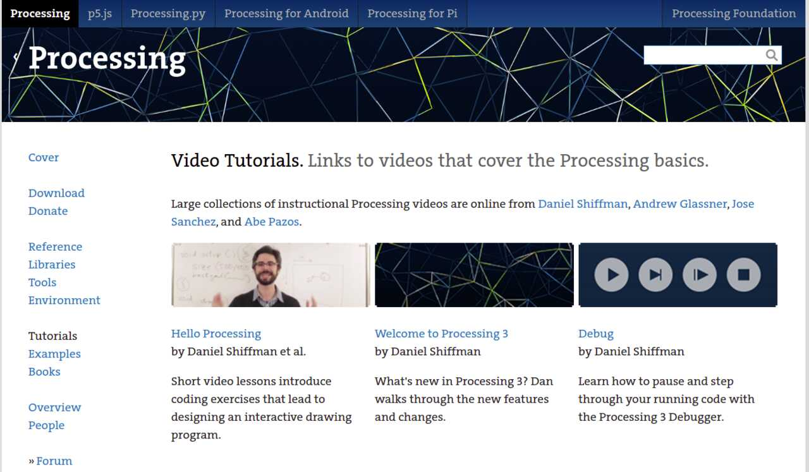

Group Assignment:
- Compare as many tool options as possible.
Individual Assignment:
- Write an application that interfaces a user with an input and/or output device that you made
Learning Outcomes:
- Interpret and implement design and programming protocols to create a Graphic User Interface (GUI).
- Document your process
- Explain the UI that you made and how you did it
- Outline problems and how you fixed them
- Include original code (or a screenshot of the app code if that’s not possible)
- Included a ‘hero shot/video’ of your application running with your board
Group Assignment
For the group assingment we looked at various interfaces such as:
- Processing
- Java
- Labview
After looking at various videos of them it was decided that the best interface to use for my project is Processing
Individual Assignment
The individual assignment for this week was to write an application that interfaces a user with an input or output device that you made. The device I chose to create an interface for was the voltage reading device that I have used in the pervious weeks.
As an added bonus, I decided to output the value that was passed to a secondary boarded that is networked to a master using I2C.
As usual I will present the assignment in terms of the workflow used to design the interface.
Workflow
The steps used to create the user interface are as as follows:
- Select the UI you intend to use and learn about it
- Program a simple UI that is not connected to input data
- Connect input data to the UI using the serial monitor
- Test the connected UI
- Debug as necessary
The assignment will be presented using the workflow listed.
1. Select the UI you intend to use and learn about it
The UI that I selected for my assignment and my final project is called Processing. Processing is an application written in C that interfaces very well with Arduino IDE. This is the reason why it was selected. To begin, I had to learn how to use the interface and program it. Below are some important links and tutorials.
Processing website
The first and most important thing to discuss is the Processing Website. The website is a great resource for downloading and installing the program as well as tutorials.
The following tutorials are a very great introduction and reference.
Get Processing IDE to communicate with Arduino IDE
Once a general understanding of how to use and create an interface using Processing the next step is to understand how to get it to communicate with Arduino IDE. The following link provides a great tutorial:
The way to do this is through the serial monitor. Details on how to do this will be discussed in step 3.
Get Serial data on Processing IDE via bluetooth
The last tutorial was for pulling data from a microchip connected to a cell phone via bluetooth. This is a functionality I plan to include in my final project. The tutorial can be found at the link below.
Now that the tutorials have been followed and found, we can move to programming a simple UI.
2. Program a simple UI that is not connected to input data
In this step I learned how to use Processing to program a simple UI that is not connected to any input data, but shows the capabilities of the UI.
The first program that I wrote simply creates a background and a red rectangle with a width “x” that is increased by 1 with every iteration of the loop. Therefore, X will increase up to 450 pixels wide.
Note that I also print the value of x beside the text “voltage is: “. The idea is to use this program to start with making the UI and then replace the value of “x” with a voltage that is passed from the AT-Tiny-1614 through its Serial.
The code for this program is shown below:
int x=0;
void setup(){
size(500,400);
}
void draw() {
background(216,255,149);
text("Voltage is:",0,195);
text(x,65,195);
stroke(0);
fill(255,0,0);
if(x<450){
rect(0, 200, x, 200);
x = x+1;
}
else {
x=0;
}
}
Below is a video demonstrating the result from compiling and running this code.
3. Connect input data to the UI using the serial monitor
The next step is to send data from the AT-tiny chip to the Processing UI program that was written in the previous step. This is done via the Serial using the following commands:
import processing.serial.*
this imports a serial into the processing program
Serial myPort;
declares a serial variable called myPort
In the Setup you will want to intialize the Port to read the serial value from and define how much it will read using the following code
myPort = new Serial (this, "/dev/ttyUSB0",9600)
This defines the USB port that the micro controller is plugged into (typically COM X on a Windos system)
void serialEvent(Serial myPort){
Voltage = float(myPort.readStringUntil('\n'));
}
creates a serialEvent funciton called myport where you read the serial at the given port and read the string until the end of the line. You then convert the string into a floating point variable.
In the void draw function we take this voltage value and map it as a number of pixels in the rectangle function.
The entire code of the program is shown below.
import processing.serial.*; //imports the serial library
Serial myPort; // initialize a variable named "myPort"
float Voltage; // declare variable to receive the Voltage value
float x; // variable that maps the Voltage to bits
void setup(){
size(500,400);
myPort = new Serial (this, "/dev/ttyUSB0", 9600);
myPort.bufferUntil( '\n' );
}
void serialEvent (Serial myPort){
Voltage = float(myPort.readStringUntil( '\n'));
x = map(Voltage, 0,20,0,500);
}
void draw() {
background(216,255,149);
text("Voltage is:",0,195);
text(Voltage,65,195);
stroke(0);
fill(255,0,0);
rect(0, 200, x, 200);
}
The video below shows the result in which I change the voltage and it changes the value of voltage shown on the screen (in volts) as well as the length of the red rectangle.